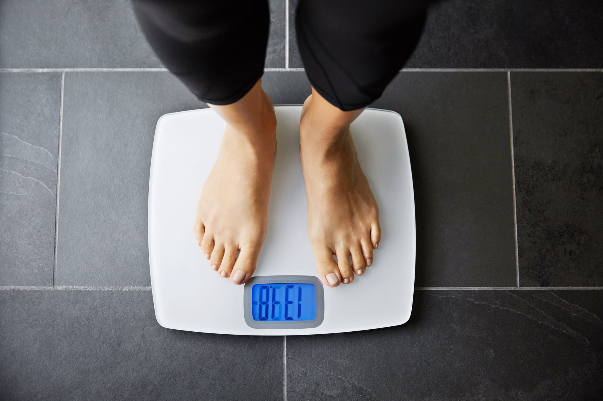
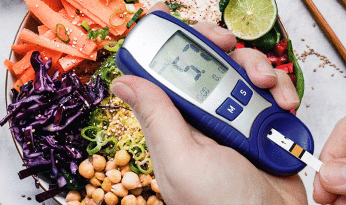

<!DOCTYPE html>
<html lang="en">
<head>
    <meta charset="UTF-8">
    <title>Make The Change</title>

    <!-- Required meta tags -->
    <meta charset="utf-8">
    <meta name="viewport" content="width=device-width, initial-scale=1, shrink-to-fit=no">

    <link rel="stylesheet" href="https://stackpath.bootstrapcdn.com/bootstrap/4.3.1/css/bootstrap.min.css" integrity="sha384-ggOyR0iXCbMQv3Xipma34MD+dH/1fQ784/j6cY/iJTQUOhcWr7x9JvoRxT2MZw1T" crossorigin="anonymous">
    <link rel="stylesheet" href="css/main.css">
    <link rel="stylesheet" href="css/reset.css">

</head>
<body>

<ul class="nav justify-content-end nav-tabs">
    <li class="home">
        <a>MAKE THE CHANGE</a>
    </li>
    <li class="nav-item">
        <a class="nav-link" href="what.html">WHAT?</a>
    </li>
    <li class="nav-item">
        <a class="nav-link" href="how.html">HOW?</a>
    </li>
    <li class="nav-item">
        <a class="nav-link active" href="why.html">WHY?</a>
    </li>
</ul>

<h3 id="why">ENVIRONMENTAL</h3>

<div class="container">

<div class="reason">
<p>SAVE LIVES.</p>
   <p> The report found that “unhealthy diets are the largest global burden of disease,” having surpassed even tobacco use as the leading cause of death and disease worldwide. Eating more plants and fewer animal products could prevent 10.9 to 11.6 million premature deaths from heart disease, diabetes, and other chronic conditions every year, according to the researchers.</p>
</div>

<div id="firstsquare"></div>


    <div class="reason">
<p>ALLEVIATE HUNGER.</p>
    <p>The report found that more than 820 million people around the world lack sufficient food. It also noted that “almost two thirds of all soybeans, maize, barley, and about a third of all grains are used as feed for animals.”</p>
    </div>

<div id="secondsquare"></div>

    <div class="reason">
<p>REDUCE THE IMPACTS OF CLIMATE CHANGE.</p>
   <p> Researchers found that food production is responsible for up to 30 percent of total greenhouse gas emissions, with animal products accounting for the vast majority—about three-quarters—of these effects. The report states that projections for the future show that “vegan and vegetarian diets were associated with the greatest reductions in greenhouse-gas emissions.”</p>
    </div>

    <div class="reason">
<p>SAVE WATER.</p>
    <p>Agriculture accounts for about 70 percent of freshwater use, making it “the world’s largest water-consuming sector.” Meat and dairy products lead the way in guzzling up large quantities of water. Producing just a pound of beef requires 1,800 gallons of water. Another study estimated that if the U.S. cut animal product consumption even by half, our food production would require 37 percent less water.
</p>
    </div>


    <div class="reason">
<p>MINIMIZE AGRICULTURAL LAND USE.</p>
   <p> The report found that agriculture occupies 40 percent of Earth’s ice-free landmass, noting that animal products have a large environmental footprint on our croplands. Another 2017 study projected that if Americans ate more beans and less beef, we would require 42 percent less cropland.</p>
    </div>

<div id="thirdsquare"></div>
</div>

<h3 id="personal">PERSONAL HEALTH</h3>

    <div class="container">

        <div class="reason">
<p>RICHER IN NUTRIENTS.</p>
    <p>Several studies have reported that vegan diets tend to provide more fiber, antioxidants and beneficial plant compounds. They also appear to be richer in potassium, magnesium, folate and vitamins A, C and E. Base your diet around nutrient-rich whole plants and fortified foods.</p>
        </div>

        <div id="fourthsquare"></div>

        

        <div class="reason">
<p>HELP LOSE EXCESS WEIGHT.</p>
    <p>Many observational studies show that vegans tend to be thinner and have lower body mass indexes (BMIs) than non-vegans. In addition, several randomized controlled studies — the gold standard in scientific research — report that vegan diets are more effective for weight loss. In one study, a vegan diet helped participants lose 9.3 lbs (4.2 kg) more than a control diet over an 18-week study period.
</p>
        </div>

        <div id="fifthsquare"></div>

        <div class="reason">
<p>CANCER PREVENTION.</p>
    <p>According to the World Health Organization, about one-third of all cancers can be prevented by factors within your control, including diet. For instance, eating legumes regularly may reduce your risk of colorectal cancer by about 9–18%. Research also suggests that eating at least seven portions of fresh fruits and vegetables per day may lower your risk of dying from cancer by up to 15%.
</p>
        </div>

        <div class="reason">
<p>LOWER RISK OF HEART DISEASE.</p>
   <p> Observational studies comparing vegans to vegetarians and the general population report that vegans may benefit from up to a 75% lower risk of developing high blood pressure. Vegans may also have up to a 42% lower risk of dying from heart disease. What's more, several randomized controlled studies report that vegan diets are much more effective at reducing blood sugar, LDL cholesterol and total cholesterol levels than the diets they are compared to</p>
        </div>

        

        <div class="reason">
<p>LOWER BLOOD SUGAR LEVELS AND IMPROVE KIDNEY FUNTION.</p>
    <p>Going vegan may also have benefits for type 2 diabetes and declining kidney function.Indeed, vegans tend to have lower blood sugar levels, higher insulin sensitivity and up to a 50–78% lower risk of developing type 2 diabetes. Studies even report that vegan diets lower blood sugar levels in diabetics more than the diets from the American Diabetes Association (ADA), American Heart Association (AHA) and National Cholesterol Education Program (NCEP).
</p>
        </div>
</div>


<script src="https://code.jquery.com/jquery-3.3.1.slim.min.js" integrity="sha384-q8i/X+965DzO0rT7abK41JStQIAqVgRVzpbzo5smXKp4YfRvH+8abtTE1Pi6jizo" crossorigin="anonymous"></script>
<script src="https://cdnjs.cloudflare.com/ajax/libs/popper.js/1.14.7/umd/popper.min.js" integrity="sha384-UO2eT0CpHqdSJQ6hJty5KVphtPhzWj9WO1clHTMGa3JDZwrnQq4sF86dIHNDz0W1" crossorigin="anonymous"></script>
<script src="https://stackpath.bootstrapcdn.com/bootstrap/4.3.1/js/bootstrap.min.js" integrity="sha384-JjSmVgyd0p3pXB1rRibZUAYoIIy6OrQ6VrjIEaFf/nJGzIxFDsf4x0xIM+B07jRM" crossorigin="anonymous"></script>

</body>
</html>